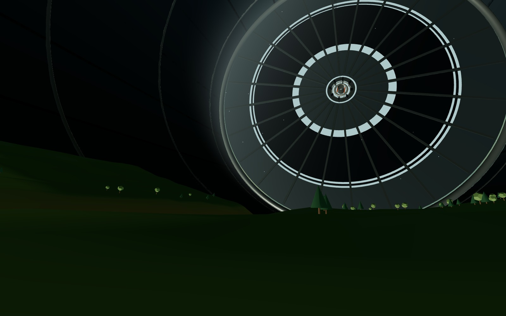

TORUS HOME · 1.0
TORUS HOME · 1.0
01 / HOME
Torus Home
Explore a circular, single-story home built around a shared garden.
Enter the home ↗INTERACTIVE WORLDS
PLACES TO EXPLORE
Step inside a carefully designed home, wander a landscape built inside a vast cylinder, or explore both together.
TORUS HOME · 1.0
01 / HOME
Explore a circular, single-story home built around a shared garden.
Enter the home ↗
O'NEILL CYLINDER · SPACE HABITAT02 / WORLD
Walk a seeded, changing landscape beneath the far side of the habitat.
Enter the cylinder ↗
A HOME INSIDE A WORLD
03 / COMBINATION
Start inside the Torus Home, then step out into the O’Neill cylinder.
Explore both ↗